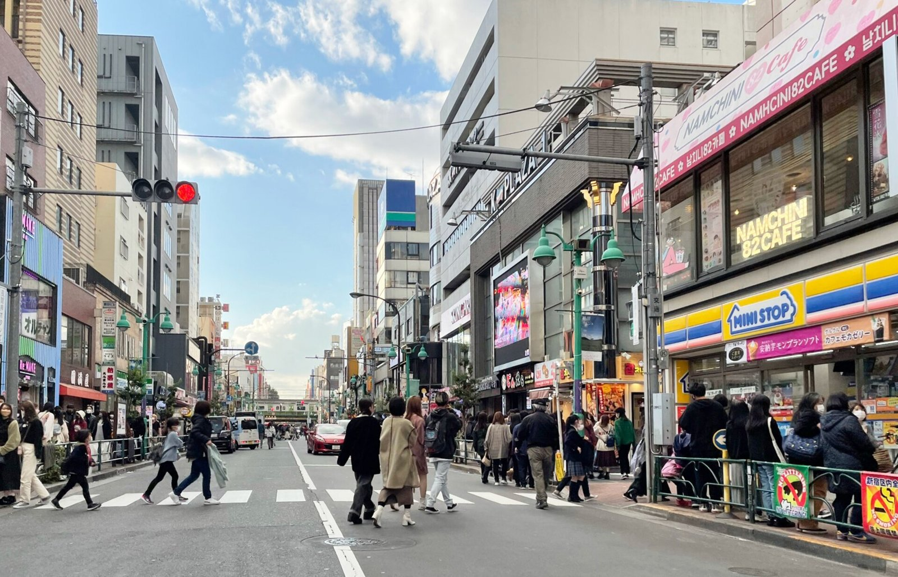

[한일수교 60년 번외④] 조선학교 55곳, 학생 6000~8000명… 한국 국적 학생이 다닌다
1960~70년대 120곳 넘고 학생 4만명이던 학교가 55곳, 6000~8000명으로 줄었다
2018년 고교 무상화에서 외국인학교 42곳은 들어가고 조선학교 55곳만 빠졌다
2019년 8월 대법원 상고 기각으로 법적 경로가 닫혔다, 2026년에도 바뀐 것은 없다
2024년 5월 기준 일본의 조선학교는 55곳이다. 북한계 학교라 불리지만 한국 국적 학생이 다닌다. 재일 교육 문제가 문화외교가 아니라 생존과 정체성의 문제인 까닭이 거기 있다.

※ 이 연재는 2025년 인천투데이에 실린 「한일수교 60년」 연재를 잇는다. 논지는 이어받되 수치와 사실은 2026년 10월 기준으로 다시 확인해 썼다.
1. 77년의 숫자
가. 줄어든 규모
1960~70년대 전성기에 120곳을 넘었고 학생이 4만명 이상이었다. 지금은 약 55곳, 학생 6000~8000명이다.
나. 시작과 탄압
해방 뒤 재일 조선인이 학교를 세웠다. 1948년 일본 정부의 폐쇄령이 나왔고 같은 해 4월 한신 교육투쟁이 있었다. 1949년 재일조선인연맹이 해산되면서 대부분의 학교가 문을 닫았다.
다. 재정
북한의 지원이 1957년부터 들어왔다. 1957년부터 2017년까지 480억엔이라는 수치가 제시되지만 실제 송금은 크게 줄었고 2006년 이후 제재로 막혔다.
마이니치신문은 2025년 2월 조선학교의 연간 적자를 약 1000만엔으로 보도했다. 학부모 납입금과 기부로 버틴다.
2. 2010년 이후의 배제
고교 수업료 무상화에서 조선학교가 2010년부터 제외됐다. 2013년 2월 20일 문부과학성 성령으로 공식 제외됐다. 지방자치단체 보조금도 줄었다.
2018년 기준으로 외국인학교 42곳이 무상화에 들어갔고 조선학교 55곳은 빠졌다.
소송이 이어졌다. 2017년 지방법원에서 원고 승소가 나왔으나 2018년 9월 오사카고등법원, 10월 도쿄고등법원에서 뒤집혔다. 2019년 8월 대법원이 상고를 기각했다.
법적 경로는 닫혔다. 2026년 10월 기준으로 이 결정이 바뀌었다는 사실은 확인하지 못했다.
3. 졸업장과 대학 진학
조선학교 졸업 자격의 인정이 일본 대학마다 다르다. 통일된 기준이 없다.
이것은 무상화 배제보다 더 직접적인 불이익이다. 수업료는 돈의 문제이고 졸업 자격은 진로의 문제다.
4. 국제 기구의 지적
국제연합의 조약기구들이 일본의 조치를 지적했다. 휴먼라이츠워치도 문제를 제기했다. 2025년에는 국제연합 인권 분야 재정 분담을 둘러싼 논란이 있었다.
국제기구의 지적은 법적 강제력이 없다. 기록으로 남는다. 2019년 대법원 결정 뒤 남은 경로가 그 기록이다.
5. 2009년 교토 혐오발언 사건
2009년 교토의 조선초급학교에 혐오 시위가 벌어졌다. 2013년 법원이 인종차별로 판단했고 2014년 대법원에서 확정됐다.
일본 사법부가 혐오발언을 인종차별로 인정한 중요한 사례다. 같은 사법부가 무상화 배제는 적법하다고 봤다.
차별의 행위는 처벌하고 제도의 배제는 인정하는 구조다.
6. 한국 국적 학생이 다니는 까닭
조선학교에 한국 국적 학생이 다닌다. 마이니치신문과 도쿄신문은 사이타마 조선학교 학생 146명 가운데 한국 국적이 다수라고 보도했다.
재일 한국 국적자는 2024년 12월 기준 약 41만명, 조선적은 약 2만3000명이다. 민단계 한국학교 여섯 곳 가운데 초등 과정이 있는 곳은 세 곳이다.
한글을 초등 단계에서 가르치는 학교가 조선학교 쪽에 더 많다는 사실이 이 선택을 설명한다. 정치적 선택이 아니라 교육 과정의 선택인 경우가 있다.
이 사실은 한국 정부에 두 가지를 요구한다. 조선학교 차별 문제를 남북 문제로만 보지 말 것, 그리고 한국계 학교의 초등 과정 공백을 메울 것이다.
7. 시민 연대
일본 시민 단체가 항의를 이어 왔다. 오사카의 화요행동은 2025년 1월 600회를 맞았고 2024년 11월 약 6만명의 서명이 문부과학성에 제출됐다. 서울 일본대사관 앞 몽당연필 금요행동은 500회를 넘겼다. 도쿄신문이 보도한 모금은 약 1억8000만엔이다.
민단과 총련의 협력 사례가 나오고 있고, 새로 건너온 한국인 사업가들의 시각도 달라졌다. 재일동포 사회의 세 갈래 구분이 세대 교체와 함께 느슨해진다.
8. 2026년의 좌표
2026년 2월 8일 일본 총선에서 자민당이 316석을 얻고 참정당이 15석으로 늘었다. 외국인 관련 규제를 공약으로 내건 정당이 의석을 늘렸다.
조선학교 문제가 개선되는 방향으로 움직일 정치적 조건은 2026년에 더 나빠졌다.
같은 해 5월 안동 정상회담에서 조세이 탄광 유골 DNA 감정 절차가 정해졌다. 인도적 사안으로 분리하면 움직인다는 사례다.
조선학교 문제도 교육권이라는 인도적 틀로 다룰 수 있다. 다만 그 틀로 바꾸려면 한국 정부가 남북 구도와 분리해 접근해야 한다. 2026년 10월 기준으로 그런 접근이 있었다는 사실은 확인하지 못했다.
9. 정리
한글날에 쓰는 이야기는 보통 한글의 우수성이다. 재일 교육의 이야기는 다르다. 쓰지 않으면 사라지는 언어를 지키는 사람들의 이야기다.
괴테인스티투트와 알리앙스프랑세즈와 브리티시카운슬과 공자학원과 세종학당은 자국어를 밖으로 퍼뜨린다. 재일 학교는 안에서 버틴다. 목적이 다르다.
77년을 버틴 학교가 55곳 남았다. 숫자는 줄었고 학생 구성은 바뀌었다. 바뀐 구성이 한국 정부가 이 문제를 다룰 근거다.
참고문헌
일본 문부과학성, 고등학교 등 취학지원금 관련 성령, 2013년 2월 20일
일본 최고재판소 상고 기각, 2019년 8월
일본 출입국재류관리청, 재류외국인 통계, 2024년 12월
마이니치신문·도쿄신문 조선학교 관련 보도, 2025년
인천투데이, 「한일수교 60년 번외④」, 2025년 10월 9일